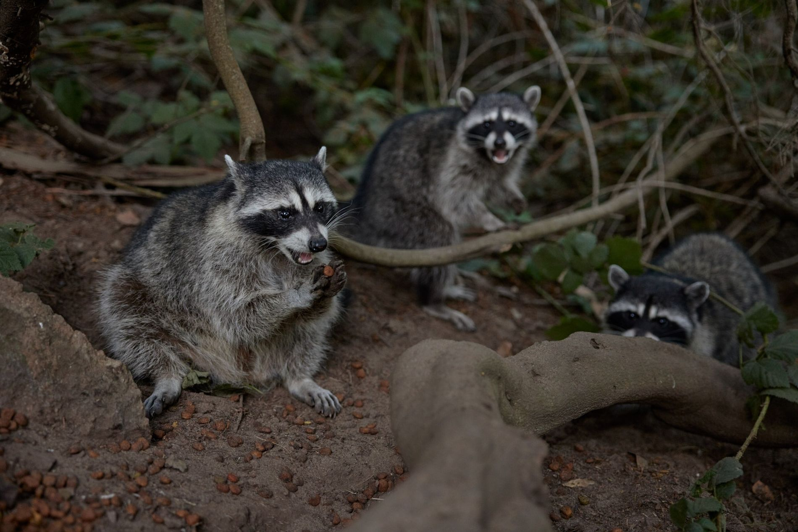

Hábitos Alimenticios
Los mapaches son mamíferos omnívoros altamente adaptables, cuya dieta comprende una amplia variedad de recursos disponibles en su entorno. Su alimentación incluye frutas, semillas, insectos, roedores, peces, anfibios, cangrejos y otros crustáceos, huevos de aves e incluso carroña. Exhiben un comportamiento alimentario característico al manipular la comida con sus ágiles patas delanteras. Se ha observado que lavan cuidadosamente lombrices y sapos, presumiblemente para eliminar posibles toxinas cutáneas y suciedad. Adicionalmente, suelen sumergir alimentos más secos y duros en agua para ablandarlos y facilitar su ingestión.
Hábitos Reproductivos

Los mapaches se reproducen generalmente una vez al año, durante los meses de enero a marzo. Las hembras suelen dar a luz a camadas de entre 2 y 5 crías después de un período de gestación de aproximadamente 63 días. Las crías nacen ciegas y dependen completamente de su madre durante las primeras semanas. A medida que crecen, comienzan a explorar su entorno bajo la supervisión de la madre, aprendiendo habilidades esenciales para sobrevivir.
La época de apareamiento de los mapaches va de febrero a junio y la gestación dura de 63 a 65 días. Tienen una camada de crías por año y en cada camada pueden nacer entre tres y siete crías, aunque usualmente nacen cuatro. Los bebés nacen ciegos y comenzarán a abrir los ojos entre los 18 y los 24 días de edad. Permanecerán con la madre durante el primer invierno para independizarse la siguiente primavera. La madre y sus descendientes pueden permanecer juntos incluso en edad adulta.